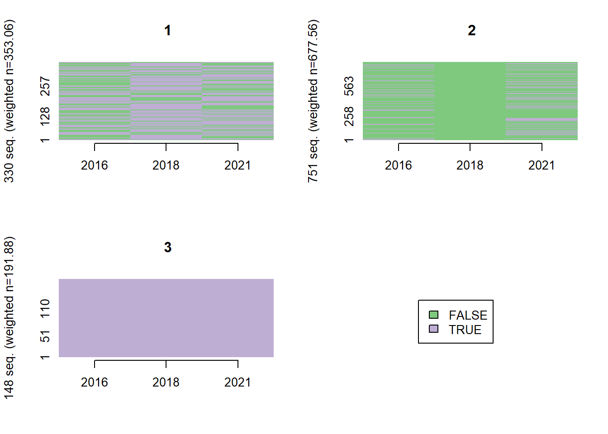
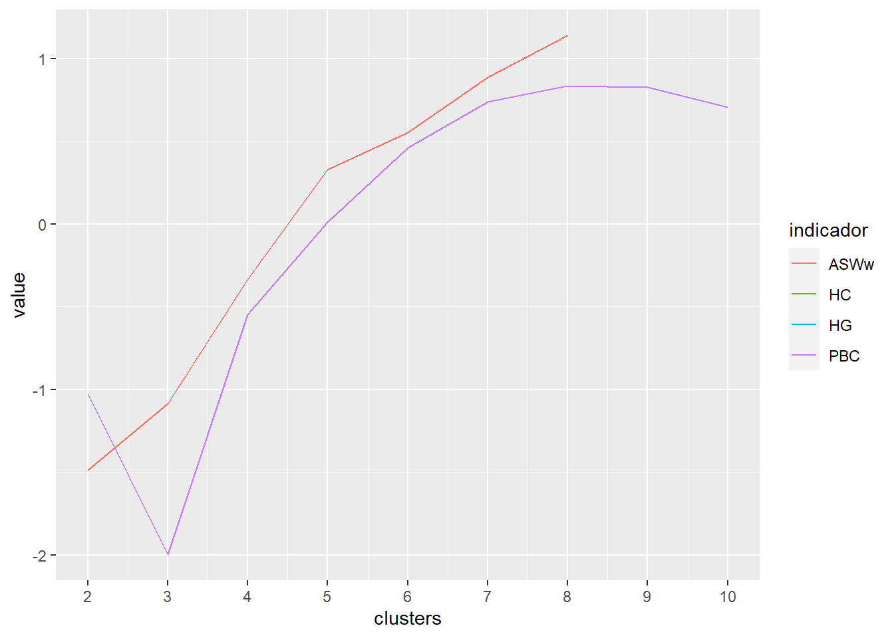

Capítulo 4 Modelo multinomial logit
load('datos_salud_modelo.RData')4.1 Comparación trayectorias
with(elsoc_salud_modelo, rcompanion::cramerV(trayectoria_gmm.4lin, trayectoria_gmm.5lin, bias.correct = TRUE))## Cramer V
## 0.8303Trayectorias según clasificación
elsoc_salud_long %>%
left_join(elsoc_salud_modelo %>% select(idencuesta, trayectoria_gmm.4lin), by = 'idencuesta') %>%
filter(!is.na(trayectoria_gmm.4lin)) %>%
group_by(trayectoria_gmm.4lin) %>%
sjlabelled::as_label(ola) %>%
ggplot(aes(y = phq9, x = ola, group = idencuesta, color = trayectoria_gmm.4lin)) +
facet_wrap(~trayectoria_gmm.4lin) +
geom_line(alpha = .25) +
geom_point(alpha = .25) +
geom_hline(yintercept = 10, linetype = 2) +
scale_y_continuous(limits = c(0, 27)) +
theme(legend.position = 'none') +
ylab('Indice PHQ-9') +
xlab(NULL)
4.2 Variable dependiente: Trayectorias LCMM 4 clases - sin trayectoria salud subjetiva
m1 <- elsoc_salud_modelo %>%
sjlabelled::as_label(m0_sexo_w01, proyecto_vida_w03) %>%
nnet::multinom(trayectoria_gmm.4lin ~ m0_sexo_w01 + m0_edad_w01 + log_ing + trayectoria_deuda + trayectoria_apoyo_social + trayectoria_ocup,
data = ., weights = ponderador02_w01, quiet = TRUE) ## # weights: 68 (48 variable)
## initial value 1734.839267
## iter 10 value 1225.250111
## iter 20 value 1041.422647
## iter 30 value 971.392574
## iter 40 value 969.343671
## iter 50 value 969.339584
## final value 969.339497
## convergedm2 <- elsoc_salud_modelo %>%
sjlabelled::as_label(m0_sexo_w01, proyecto_vida_w03) %>%
nnet::multinom(trayectoria_gmm.4lin ~ m0_sexo_w01 + m0_edad_w01 + log_ing + trayectoria_deuda + trayectoria_apoyo_social + trayectoria_ocup + proyecto_vida_w03 + estresor_n_w01 + estresor_n_w03,
data = ., weights = ponderador02_w01, quiet = TRUE) ## # weights: 80 (57 variable)
## initial value 1734.839267
## iter 10 value 1283.757629
## iter 20 value 1013.716693
## iter 30 value 941.290125
## iter 40 value 920.536676
## iter 50 value 920.294114
## iter 60 value 920.289828
## iter 60 value 920.289824
## iter 60 value 920.289824
## final value 920.289824
## convergedm3 <- elsoc_salud_modelo %>%
sjlabelled::as_label(m0_sexo_w01, proyecto_vida_w03) %>%
nnet::multinom(trayectoria_gmm.4lin ~ m0_sexo_w01 + m0_edad_w01 + log_ing + trayectoria_deuda + trayectoria_apoyo_social + trayectoria_ocup + proyecto_vida_w03 + estresor_n_w01 + estresor_n_w03 + extraversion_w02 + agreeableness_w02 + conscientiousness_w02 + neuroticism_w02 + openness_w02,
data = ., weights = ponderador02_w01, quiet = TRUE)## # weights: 100 (72 variable)
## initial value 1716.621973
## iter 10 value 1173.340891
## iter 20 value 993.174888
## iter 30 value 903.475374
## iter 40 value 873.802311
## iter 50 value 853.882389
## iter 60 value 849.364505
## iter 70 value 849.348992
## iter 80 value 849.347104
## final value 849.346994
## convergedem1 <- marginaleffects(m1, type = "probs", conf_level = .95) %>%
summary() %>%
mutate(term = paste0(term, contrast))
em2 <- marginaleffects(m2, type = "probs", conf_level = .95) %>%
summary() %>%
mutate(term = paste0(term, contrast))
em3 <- marginaleffects(m3, type = "probs", conf_level = .95) %>%
summary() %>%
mutate(term = paste0(term, contrast))modelsummary::modelsummary(list(m1, m2, m3),
estimate = "{estimate}{stars}",
statistic = NULL,
stars = c('*' = .1, '**' = .05, '***' = .01),
shape = term + response ~ model,
exponentiate = TRUE)| Model 1 | Model 2 | Model 3 | ||
|---|---|---|---|---|
| (Intercept) | Trayectoria sintomas moderados | 7.810 | 3.185 | 3.600 |
| Trayectoria de sintomas ascendente | 0.059 | 0.019 | 0.090 | |
| Trayectoria sintomas severos persistentes | 0.490 | 0.051 | 0.010 | |
| m0_sexo_w01Mujer | Trayectoria sintomas moderados | 2.771*** | 2.766*** | 2.505*** |
| Trayectoria de sintomas ascendente | 4.421*** | 4.434*** | 3.570*** | |
| Trayectoria sintomas severos persistentes | 4.403*** | 4.537*** | 5.243*** | |
| m0_edad_w01 | Trayectoria sintomas moderados | 0.975*** | 0.970*** | 0.978*** |
| Trayectoria de sintomas ascendente | 0.974*** | 0.968*** | 0.965*** | |
| Trayectoria sintomas severos persistentes | 0.983 | 0.974** | 0.978* | |
| log_ing | Trayectoria sintomas moderados | 0.719*** | 0.797** | 0.799* |
| Trayectoria de sintomas ascendente | 0.889 | 0.986 | 0.782 | |
| Trayectoria sintomas severos persistentes | 0.704 | 0.851 | 1.018 | |
| trayectoria_deudaReduccion sobrecarga deuda | Trayectoria sintomas moderados | 1.239 | 1.261 | 1.193 |
| Trayectoria de sintomas ascendente | 2.035* | 2.287** | 2.560** | |
| Trayectoria sintomas severos persistentes | 1.595 | 1.930 | 2.969** | |
| trayectoria_deudaAumento sobrecarga deuda | Trayectoria sintomas moderados | 0.638** | 0.655* | 0.708 |
| Trayectoria de sintomas ascendente | 1.011 | 1.112 | 1.339 | |
| Trayectoria sintomas severos persistentes | 1.586 | 1.970 | 3.038* | |
| trayectoria_deudaBastante/muy sobrecargados deuda | Trayectoria sintomas moderados | 1.748** | 1.517* | 1.539* |
| Trayectoria de sintomas ascendente | 1.945 | 1.751 | 1.813 | |
| Trayectoria sintomas severos persistentes | 2.942** | 3.004** | 4.719*** | |
| trayectoria_apoyo_socialApoyo social/decreciente | Trayectoria sintomas moderados | 3.133*** | 3.197*** | 3.001*** |
| Trayectoria de sintomas ascendente | 3.498* | 3.259* | 2.862 | |
| Trayectoria sintomas severos persistentes | 1.549 | 1.385 | 1.109 | |
| trayectoria_apoyo_socialApoyo social medio | Trayectoria sintomas moderados | 3.116*** | 2.983*** | 2.747*** |
| Trayectoria de sintomas ascendente | 3.604* | 3.228* | 2.842 | |
| Trayectoria sintomas severos persistentes | 1.915 | 1.585 | 1.079 | |
| trayectoria_apoyo_socialApoyo social cambiante | Trayectoria sintomas moderados | 4.672*** | 4.665*** | 3.993*** |
| Trayectoria de sintomas ascendente | 4.807** | 4.378** | 3.544** | |
| Trayectoria sintomas severos persistentes | 1.920 | 1.634 | 1.457 | |
| trayectoria_apoyo_socialSin apoyo social | Trayectoria sintomas moderados | 5.890*** | 5.975*** | 5.827*** |
| Trayectoria de sintomas ascendente | 6.321** | 6.148** | 5.894** | |
| Trayectoria sintomas severos persistentes | 10.690*** | 9.958*** | 11.979*** | |
| trayectoria_ocupPasan de inactividad a ocupacion | Trayectoria sintomas moderados | 0.553 | 0.522* | 0.531 |
| Trayectoria de sintomas ascendente | 2.480** | 2.453* | 2.134 | |
| Trayectoria sintomas severos persistentes | 4.528*** | 5.030*** | 5.861*** | |
| trayectoria_ocupOcupados con periodos sin ocupacion | Trayectoria sintomas moderados | 0.661* | 0.557** | 0.578** |
| Trayectoria de sintomas ascendente | 1.157 | 1.050 | 1.010 | |
| Trayectoria sintomas severos persistentes | 1.770 | 1.639 | 1.949 | |
| trayectoria_ocupMayoritariamente inactivos | Trayectoria sintomas moderados | 1.753** | 1.830*** | 1.396 |
| Trayectoria de sintomas ascendente | 1.068 | 1.317 | 0.687 | |
| Trayectoria sintomas severos persistentes | 1.961 | 2.908* | 2.653 | |
| trayectoria_ocupMayoritariamente trabajo no remunerado | Trayectoria sintomas moderados | 0.712 | 0.743 | 0.662 |
| Trayectoria de sintomas ascendente | 1.402 | 1.446 | 1.367 | |
| Trayectoria sintomas severos persistentes | 2.418* | 2.685** | 2.659* | |
| trayectoria_ocupMayoritariamente desempleados | Trayectoria sintomas moderados | 2.670** | 1.681 | 1.453 |
| Trayectoria de sintomas ascendente | 0.760 | 0.515 | 0.402 | |
| Trayectoria sintomas severos persistentes | 3.945* | 2.904 | 2.818 | |
| proyecto_vida_w03Decidido direccion de vida | Trayectoria sintomas moderados | 0.422*** | 0.457*** | |
| Trayectoria de sintomas ascendente | 0.512* | 0.513* | ||
| Trayectoria sintomas severos persistentes | 0.435** | 0.536 | ||
| estresor_n_w01 | Trayectoria sintomas moderados | 1.358*** | 1.317*** | |
| Trayectoria de sintomas ascendente | 0.933 | 0.926 | ||
| Trayectoria sintomas severos persistentes | 0.965 | 0.912 | ||
| estresor_n_w03 | Trayectoria sintomas moderados | 1.447*** | 1.447*** | |
| Trayectoria de sintomas ascendente | 2.040*** | 2.053*** | ||
| Trayectoria sintomas severos persistentes | 2.326*** | 2.511*** | ||
| extraversion_w02 | Trayectoria sintomas moderados | 1.013 | ||
| Trayectoria de sintomas ascendente | 0.998 | |||
| Trayectoria sintomas severos persistentes | 0.679*** | |||
| agreeableness_w02 | Trayectoria sintomas moderados | 0.808*** | ||
| Trayectoria de sintomas ascendente | 0.953 | |||
| Trayectoria sintomas severos persistentes | 0.871 | |||
| conscientiousness_w02 | Trayectoria sintomas moderados | 0.851*** | ||
| Trayectoria de sintomas ascendente | 0.942 | |||
| Trayectoria sintomas severos persistentes | 0.772** | |||
| neuroticism_w02 | Trayectoria sintomas moderados | 1.348*** | ||
| Trayectoria de sintomas ascendente | 1.251** | |||
| Trayectoria sintomas severos persistentes | 1.746*** | |||
| openness_w02 | Trayectoria sintomas moderados | 1.103* | ||
| Trayectoria de sintomas ascendente | 1.177* | |||
| Trayectoria sintomas severos persistentes | 1.102 | |||
| Num.Obs. | 1232 | 1232 | 1216 | |
| AIC | 2034.7 | 1954.6 | 1842.7 | |
| BIC | 2280.3 | 2246.2 | 2210.1 | |
| RMSE | 0.34 | 0.33 | 0.32 |
4.3 Resultados en formato grafico
m3.coefs <- broom::tidy(m3, conf.int=TRUE)Variables de control
em3 %>%
filter(term %in% c('m0_sexo_w01Mujer - Hombre', 'm0_edad_w01dY/dX', 'log_ingdY/dX', 'proyecto_vida_w03Decidido direccion de vida - No decidido direccion de vida', 'estresor_n_w01dY/dX', 'estresor_n_w03dY/dX')) %>%
mutate(term = factor(term,
levels = c('m0_sexo_w01Mujer - Hombre', 'm0_edad_w01dY/dX', 'log_ingdY/dX', 'proyecto_vida_w03Decidido direccion de vida - No decidido direccion de vida', 'estresor_n_w01dY/dX', 'estresor_n_w03dY/dX'),
labels = c('Sexo (mujer=1)', 'Edad', 'Log(ing)',
'Decidido direccion\nde vida', 'N estresores (2016)', 'N estresores (2018)')),
group = gsub('Trayectoria sintomas', 'Trayectoria sintomas\n', group)) %>%
ggplot(aes(x = estimate, y = fct_rev(term), colour = fct_rev(group))) +
geom_pointrangeh(aes(xmin = conf.low, xmax = conf.high),
position = position_dodgev(height = 0.75)) +
geom_vline(xintercept = 0, linetype = 2, alpha = .5) +
scale_color_discrete(guide = guide_legend(reverse = TRUE)) +
theme(legend.position = 'top') +
theme(legend.title = element_blank()) +
xlab('Probabilidad predicha') +
ylab(NULL)
Trayectoria sobrecarga deuda
em3 %>%
filter(grepl('trayectoria_deuda', term)) %>%
mutate(term = gsub("trayectoria_deuda", "", term),
term = gsub(" - Nada/No muy sobrecargados deuda", "", term),
group = gsub('Trayectoria sintomas', 'Trayectoria sintomas\n', group)) %>%
ggplot(aes(x = estimate, y = fct_rev(term), colour = fct_rev(group))) +
geom_pointrangeh(aes(xmin = conf.low, xmax = conf.high),
position = position_dodgev(height = 0.75)) +
geom_vline(xintercept = 0, linetype = 2, alpha = .5) +
scale_color_discrete(guide = guide_legend(reverse = TRUE)) +
theme(legend.position = 'top') +
theme(legend.title = element_blank()) +
xlab('Probabilidad predicha cr a Nada/No muy sobrecargados deuda') +
ylab(NULL)
Apoyo social
em3 %>%
filter(grepl('apoyo_social', term)) %>%
mutate(term = gsub("trayectoria_apoyo_social", "", term),
term = gsub(" - Apoyo social estable", "", term),
group = gsub('Trayectoria sintomas', 'Trayectoria sintomas\n', group)) %>%
ggplot(aes(x = estimate, y = fct_rev(term), colour = fct_rev(group))) +
geom_pointrangeh(aes(xmin = conf.low, xmax = conf.high),
position = position_dodgev(height = 0.75)) +
geom_vline(xintercept = 0, linetype = 2, alpha = .5) +
scale_color_discrete(guide = guide_legend(reverse = TRUE)) +
theme(legend.position = 'top') +
theme(legend.title = element_blank()) +
xlab('Probabilidad predicha cr a Apoyo social estable') +
ylab(NULL)
Trayectoria ocupacional
em3 %>%
filter(grepl('ocup', term)) %>%
mutate(term = gsub("trayectoria_ocup", "", term),
term = gsub(" - Ocupados estables", "", term),
group = gsub('Trayectoria sintomas', 'Trayectoria sintomas\n', group)) %>%
ggplot(aes(x = estimate, y = fct_rev(term), colour = fct_rev(group))) +
geom_pointrangeh(aes(xmin = conf.low, xmax = conf.high),
position = position_dodgev(height = 0.75)) +
geom_vline(xintercept = 0, linetype = 2, alpha = .5) +
scale_color_discrete(guide = guide_legend(reverse = TRUE)) +
theme(legend.position = 'top') +
theme(legend.title = element_blank()) +
xlab('Probabilidad predicha cr a Ocupados estables') +
ylab(NULL)
Variables de personalidad
em3 %>%
filter(term %in% c('extraversion_w02dY/dX', 'agreeableness_w02dY/dX', 'conscientiousness_w02dY/dX', 'neuroticism_w02dY/dX', 'openness_w02dY/dX')) %>%
mutate(term = gsub("_w02", "", term),
term = str_to_title(gsub("dY/dX", "", term)),
group = gsub('Trayectoria sintomas', 'Trayectoria sintomas\n', group)) %>%
ggplot(aes(x = estimate, y = fct_rev(term), colour = fct_rev(group))) +
geom_pointrangeh(aes(xmin = conf.low, xmax = conf.high),
position = position_dodgev(height = 0.75)) +
geom_vline(xintercept = 0, linetype = 2, alpha = .5) +
scale_color_discrete(guide = guide_legend(reverse = TRUE)) +
theme(legend.position = 'top') +
theme(legend.title = element_blank()) +
xlab('Probabilidad predicha') +
ylab(NULL)